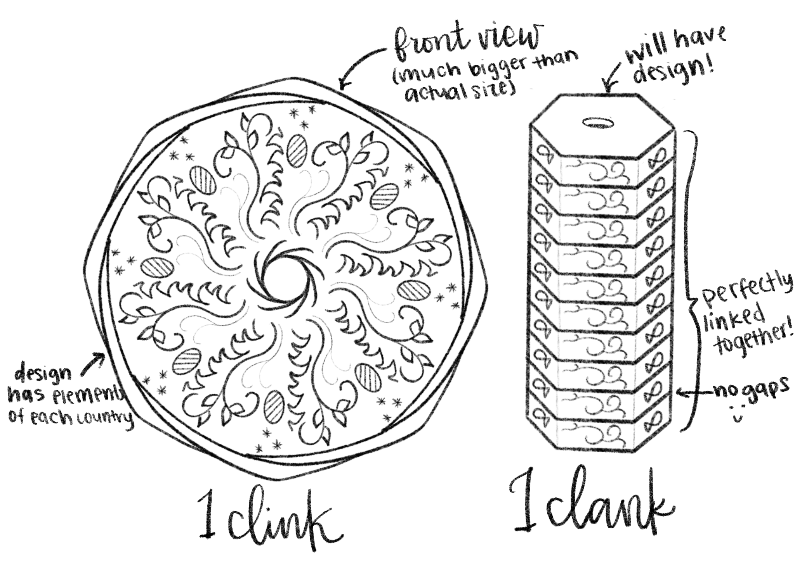

Map of Faymere
Faymere is a fantasy world. It consists of 8 countries, in various sizes. Faymere is the name of the mainland continent, but includes the isle of Fymri. Faymere as a whole has a polytheistic religion system, and each country worships a certain god especially. The people in each country get magic from their main god, and use that magic in their everyday lives
Faymere's magic system comes from Faymere's gods. Faymere's gods each have a main element, and are said to be within that element, as well as able to have a corpreal form outside of it. To use magic in Faymere, you must follow the god's moral compass. Each god differs in what they would let a person do with their element, and it varies amoung person to person. However, a surefire way to gain more power is to befriend the god through their element, wether it be spending more time with it, or just living near it. The rulers of each kingdom are said to be the most powerful magic weilders within their element, and are seen as the closest to the gods.
 Each of Faymere's countries originated as trade expanded and more land got discovered. As a result, each country shares the same form of currency. Faymere's currency consists of interlocking coins that stack on top of each other. They also have holes in the center, so that people can wear them as jewelry for convenience. These coins are called clink, and they are linked together in stacks of 10 to form a clank. Citizens call the clinks links or cs, and they call the clanks, stacks or pipes. These names are not used as often as clink and clank, but people know what they are refrencing anyways. They are manufacutured in a central bank located in Dyrrith, as Dyrrith has the most prominent metalworkers in Faymere. The coins interlocking aspects are Dyrrith's best kept secret, and prevents the coins from being counterfeit. In addition to the interlocking mechanism, the intricate design on top of the design prevents counterfeit, as it is complex and difficult to copy. This design showcases the elements of each country, and represents how they all work together to create something magical and beautiful.